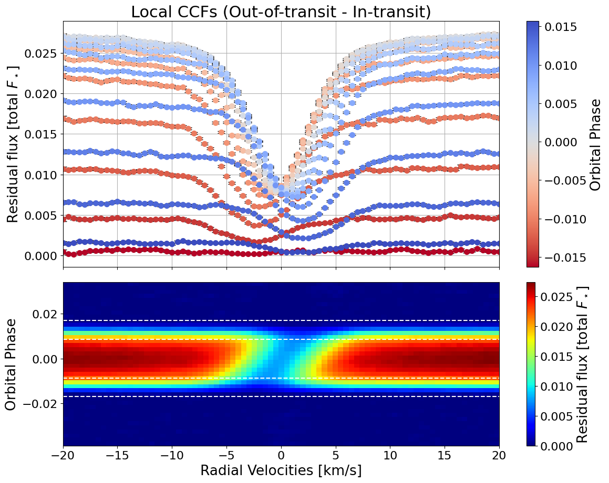
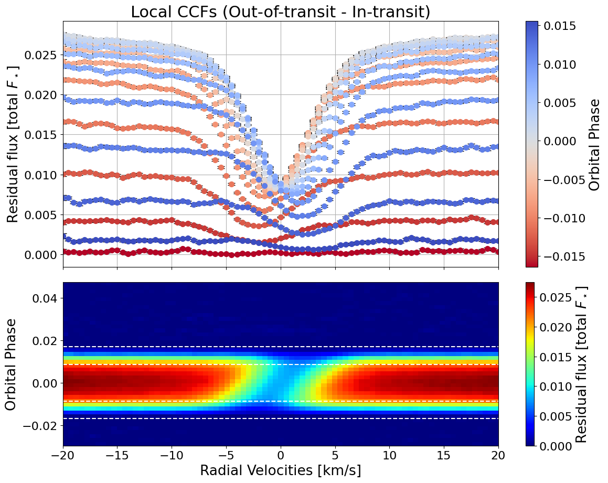
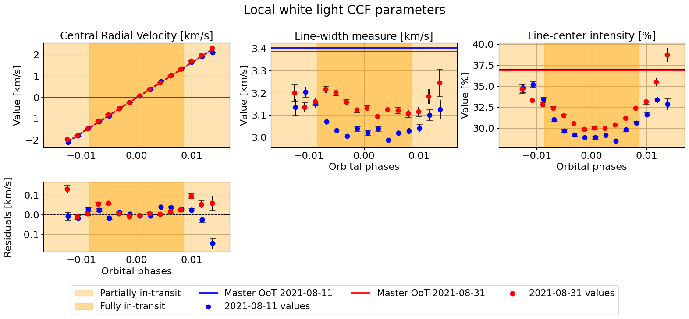
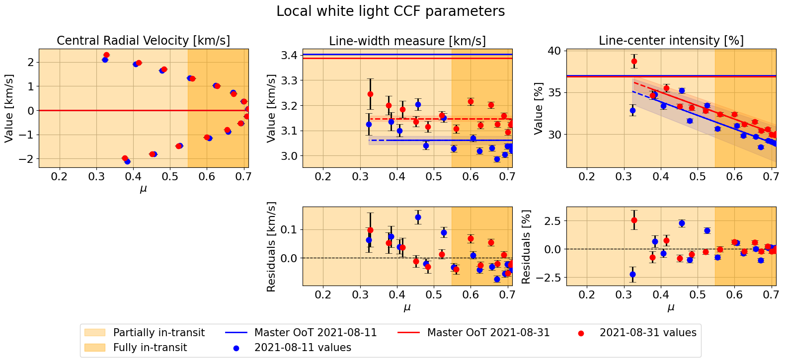

White light CCF of HD 189733 - two nights
In this notebook, we present a simple example of the application of the Doppler Shadow technique to two nights of ESPRESSO observations of HD 189733, a K1V star, extracting the white light CCFs provided by the DRS. The nights of observations were 11-08-2021 and 31-08-2021.
We run two different instances of HECATE and then use the multi_night_analysis class to combine the data.
[1]:
import numpy as np
from HECATE.HECATE import HECATE # main class
from HECATE.get_data import *
from HECATE.multi_dataset_analysis import multi_dataset_analysis # to perform the multi-night analysis
Warming up JIT-compiled functions...
[2]:
stellar_params = {
"Teff":4969, "Teff_err":43, #effective temperature [K]
"logg":4.60, "logg_err":0.01, #superficial gravity [dex]
"FeH":-0.07, "FeH_err":0.02, #metallicity [dex]
"P_rot":2.21857312, #rotation period [d]
"R_star":0.766, #radius [solar radii]
"inc_star":71.87 #stellar inclination [º]
}
planet_params = {
"P_orb":2.21857312, #orbital period [d]
"a_R":8.76863, #system scale [stellar radii]
"Rp_Rs":0.1602, #planet-to-star radius ratio
"t0":53988.30339, #mid-transit time [d]
"e":0, #orbital eccentricity
"w":90, #argument of periastron [º]
"inc_planet":85.465, #planet inclination [º]
"lbda":-1.00, #spin-orbit angle [º]
"dfp": -0.002424 #mid-transit phase shift, night of 2021-09-11
}
Now we quickly run HECATE for the first night of observations, saving the local CCF parameters.
[3]:
CCFs, time, airmass, berv, bervmax, snr, list_ccfs = get_CCFs(planet_params, stellar_params,
day='2021-08-11',
directory_path="HD189733_ESPRESSO_white_light_ccfs",
plot=False)
[4]:
hecate11 = HECATE(planet_params, stellar_params, time, CCFs, spectra=None, plot_soap=False)
[5]:
plot = {"fits_initial_CCF":False, # plot the initial fits to the CCFs
"sys_vel_ccf":False, # plot the systemic velocity of the star in the CCFs
"master_out_of_transit":False, # plot the master out-of-transit CCF
"local_CCFs":True, # plot the local CCFs
"photometrical_rescale":False # if the local CCFs are rescaled by the photometric transit model
}
ccf_type = "white light"
model_fit = "modified Gaussian"
[6]:
local_data11 = hecate11.extract_local_CCF(model_fit, plot, save=None)

[7]:
master_results11 = hecate11.get_profile_parameters(profiles=local_data11['master_out_of_transit_CCF'],
data_type="CCF",
observation_type="master",
model="modified Gaussian",
print_output=False,
plot_fit=False)
[8]:
local_results11 = hecate11.get_profile_parameters(profiles=local_data11['local_CCFs'],
data_type="CCF",
observation_type="local",
model="modified Gaussian",
print_output=False,
plot_fit=False)
[9]:
indices_final11 = np.array(list(set(np.where(local_results11['R2'] >= 0.95)[0]).intersection(set(np.where(hecate11.mu_in >= 0.3)[0]))))
local_params11 = [local_results11['central_rv'], local_results11['width'], local_results11['intensity']]
master_params11 = [master_results11['central_rv'], master_results11['width'], master_results11['intensity']]
Now we do the same for the second night.
[10]:
planet_params["dfp"] = -0.002300 # mid-transit phase shift, night of 2021-08-31
[11]:
CCFs, time, airmass, berv, bervmax, snr, list_ccfs = get_CCFs(planet_params, stellar_params,
day='2021-08-31',
directory_path="HD189733_ESPRESSO_white_light_ccfs",
plot=False)
[12]:
hecate31 = HECATE(planet_params, stellar_params, time, CCFs, None)
plot = {"fits_initial_CCF":False,
"sys_vel_ccf":False,
"master_out_of_transit":False,
"local_CCFs":True,
"photometrical_rescale":False}
ccf_type = "white light"
model_fit = "modified Gaussian"
local_data31 = hecate31.extract_local_CCF(model_fit, plot, save=None)

[13]:
master_results31 = hecate31.get_profile_parameters(profiles=local_data31['master_out_of_transit_CCF'], data_type="CCF",
observation_type="master", model="modified Gaussian",
print_output=False, plot_fit=False)
local_results31 = hecate31.get_profile_parameters(profiles=local_data31['local_CCFs'], data_type="CCF",
observation_type="local", model="modified Gaussian",
print_output=False, plot_fit=False)
[14]:
indices_final31 = np.array(list(set(np.where(local_results31['R2'] >= 0.9)[0]).intersection(set(np.where(hecate31.mu_in >= 0.3)[0]))))
local_params31 = [local_results31['central_rv'], local_results31['width'], local_results31['intensity']]
master_params31 = [master_results31['central_rv'], master_results31['width'], master_results31['intensity']]
Having the results for each night, we build the following dictionaries:
[15]:
night_data_11 = {
'hecate': hecate11, # HECATE instance
'indices': indices_final11, # indices of points to retain
'local_params': np.array(local_params11), # local CCF parameters
'master_params': np.array(master_params11), # master CCF parameters
'color': "blue", # color to use in the plots for this night
'label': "2021-08-11" # label to use in the plots for this night
}
night_data_31 = {
'hecate': hecate31,
'indices': indices_final31,
'local_params': np.array(local_params31),
'master_params': np.array(master_params31),
'color': "red",
'label': "2021-08-31"
}
[16]:
night_data = {"2021-08-11": night_data_11,
"2021-08-31": night_data_31}
[17]:
mult_night = multi_dataset_analysis(night_data, data_type='CCF')
We can just plot the two nights data in one single plot for each position parameter (\(\phi\) or \(\mu\)):
[18]:
mult_night.plot_parameters(param_type='phases',
fit_each_night=False,
fit_combined=False,
combined_night_names=None,
plot_nested=False,
suptitle="Local white light CCF parameters")
mult_night.plot_parameters(param_type='mu',
fit_each=False,
fit_combined=False,
combined_datasets_names=None,
plot_nested=False,
suptitle="Local white light CCF parameters")
---------------------------------------------------------------------------
TypeError Traceback (most recent call last)
Cell In[18], line 1
----> 1 mult_night.plot_parameters(param_type='phases',
2 fit_each_night=False,
3 fit_combined=False,
4 combined_night_names=None,
TypeError: multi_dataset_analysis.plot_parameters() got an unexpected keyword argument 'fit_each_night'
Or fit a linear model to each night:
[19]:
fit_results = mult_night.plot_parameters(param_type='phases',
fit_each=True,
fit_combined=False,
fit_param_indices = np.array([0]),
suptitle="Local white light CCF parameters")
22029it [00:33, 658.53it/s, batch: 7 | bound: 5 | nc: 1 | ncall: 460705 | eff(%): 4.670 | loglstar: 41.237 < 46.465 < 46.056 | logz: 24.691 +/- 0.128 | stop: 0.896]
16514it [00:21, 751.43it/s, batch: 7 | bound: 4 | nc: 1 | ncall: 320376 | eff(%): 4.991 | loglstar: -18.028 < -12.564 < -13.296 | logz: -24.236 +/- 0.091 | stop: 0.935]
------------------------------
Linear vs Constant
logZ(linear) = 24.669 ± 0.115
logZ(constant) = -24.235 ± 0.084
log Bayes factor = 48.904
Unconstrained model favored.
------------------------------
21744it [00:32, 662.19it/s, batch: 7 | bound: 4 | nc: 1 | ncall: 453714 | eff(%): 4.679 | loglstar: 41.177 < 46.450 < 45.824 | logz: 24.848 +/- 0.127 | stop: 0.899]
19989it [00:27, 722.85it/s, batch: 6 | bound: 5 | nc: 1 | ncall: 414358 | eff(%): 4.699 | loglstar: -18.564 < -11.154 < -12.700 | logz: -27.856 +/- 0.115 | stop: 0.780]
Positive vs Negative slope
===========================
logZ(m>0) = 24.870 ± 0.116
logZ(m<0) = -27.834 ± 0.103
log Bayes factor = -52.704
Positive slope favored.
==========================
Linear fit parameters:
m = 165.435056 +/- 1.415285
b = -0.037436 +/- 0.004522
ln_f = -3.527135 +/- 0.235389
------------------------------
21348it [00:31, 678.77it/s, batch: 6 | bound: 3 | nc: 1 | ncall: 444542 | eff(%): 4.686 | loglstar: 38.460 < 43.557 < 42.671 | logz: 21.551 +/- 0.130 | stop: 0.942]
16430it [00:21, 772.93it/s, batch: 7 | bound: 5 | nc: 1 | ncall: 318696 | eff(%): 4.991 | loglstar: -17.762 < -12.544 < -12.864 | logz: -24.001 +/- 0.093 | stop: 0.946]
------------------------------
Linear vs Constant
logZ(linear) = 21.553 ± 0.121
logZ(constant) = -24.002 ± 0.082
log Bayes factor = 45.554
Unconstrained model favored.
------------------------------
22035it [00:33, 652.27it/s, batch: 7 | bound: 3 | nc: 1 | ncall: 461594 | eff(%): 4.663 | loglstar: 38.355 < 43.581 < 42.517 | logz: 22.517 +/- 0.120 | stop: 0.857]
17328it [00:23, 739.36it/s, batch: 5 | bound: 6 | nc: 1 | ncall: 353121 | eff(%): 4.759 | loglstar: -17.657 < -10.923 < -12.850 | logz: -27.556 +/- 0.126 | stop: 0.989]
Positive vs Negative slope
===========================
logZ(m>0) = 22.498 ± 0.114
logZ(m<0) = -27.555 ± 0.111
log Bayes factor = -50.053
Positive slope favored.
==========================
Linear fit parameters:
m = 164.571502 +/- 1.719375
b = -0.020293 +/- 0.005079
ln_f = -3.283536 +/- 0.222750
------------------------------

[20]:
fit_results = mult_night.plot_parameters(param_type='mu',
fit_each=True,
fit_combined=False,
fit_param_indices = np.array([1, 2]),
suptitle="Local white light CCF parameters")
22605it [00:33, 669.14it/s, batch: 7 | bound: 4 | nc: 1 | ncall: 475234 | eff(%): 4.649 | loglstar: 35.422 < 40.599 < 39.962 | logz: 17.074 +/- 0.133 | stop: 0.908]
18195it [00:25, 714.59it/s, batch: 8 | bound: 3 | nc: 1 | ncall: 357570 | eff(%): 4.943 | loglstar: 30.015 < 34.744 < 34.437 | logz: 21.891 +/- 0.089 | stop: 0.872]
------------------------------
Linear vs Constant
logZ(linear) = 17.073 ± 0.122
logZ(constant) = 21.871 ± 0.083
log Bayes factor = -4.799
Zero-slope model favored
========================
Linear fit parameters:
b = 3.060819 +/- 0.016164
ln_f = -3.956272 +/- 0.218361
------------------------------
23096it [00:34, 677.73it/s, batch: 7 | bound: 5 | nc: 1 | ncall: 485384 | eff(%): 4.653 | loglstar: 36.528 < 41.724 < 41.335 | logz: 17.213 +/- 0.140 | stop: 0.915]
18637it [00:26, 710.70it/s, batch: 8 | bound: 3 | nc: 1 | ncall: 367434 | eff(%): 4.931 | loglstar: 35.976 < 40.630 < 40.184 | logz: 26.531 +/- 0.093 | stop: 0.887]
------------------------------
Linear vs Constant
logZ(linear) = 17.202 ± 0.125
logZ(constant) = 26.540 ± 0.088
log Bayes factor = -9.338
Zero-slope model favored
========================
Linear fit parameters:
b = 3.147335 +/- 0.010661
ln_f = -4.480457 +/- 0.238219
------------------------------
19183it [00:27, 688.72it/s, batch: 6 | bound: 3 | nc: 1 | ncall: 394454 | eff(%): 4.731 | loglstar: -11.934 < -6.811 < -7.790 | logz: -24.668 +/- 0.116 | stop: 0.948]
16957it [00:23, 731.53it/s, batch: 8 | bound: 3 | nc: 1 | ncall: 330574 | eff(%): 4.972 | loglstar: -24.284 < -19.258 < -19.519 | logz: -29.166 +/- 0.076 | stop: 0.872]
------------------------------
Linear vs Constant
logZ(linear) = -24.667 ± 0.108
logZ(constant) = -29.154 ± 0.071
log Bayes factor = 4.487
Unconstrained model favored.
------------------------------
19829it [00:26, 742.99it/s, batch: 6 | bound: 5 | nc: 1 | ncall: 409583 | eff(%): 4.715 | loglstar: -25.406 < -19.305 < -19.918 | logz: -36.763 +/- 0.120 | stop: 0.861]
19421it [00:28, 686.50it/s, batch: 7 | bound: 4 | nc: 1 | ncall: 401404 | eff(%): 4.709 | loglstar: -12.204 < -6.819 < -7.380 | logz: -23.497 +/- 0.111 | stop: 0.889]
Positive vs Negative slope
===========================
logZ(m>0) = -36.752 ± 0.106
logZ(m<0) = -23.491 ± 0.101
log Bayes factor = 13.261
Negative slope favored.
==========================
Linear fit parameters:
m = -16.237329 +/- 2.265884
b = 40.353182 +/- 1.362308
ln_f = -3.457440 +/- 0.225456
------------------------------
20417it [00:30, 667.70it/s, batch: 7 | bound: 5 | nc: 1 | ncall: 422878 | eff(%): 4.706 | loglstar: -3.843 < 1.553 < 1.161 | logz: -16.879 +/- 0.117 | stop: 0.884]
15484it [00:20, 745.59it/s, batch: 7 | bound: 3 | nc: 1 | ncall: 298264 | eff(%): 5.015 | loglstar: -24.670 < -20.053 < -20.629 | logz: -29.836 +/- 0.079 | stop: 0.971]
------------------------------
Linear vs Constant
logZ(linear) = -16.894 ± 0.106
logZ(constant) = -29.827 ± 0.075
log Bayes factor = 12.933
Unconstrained model favored.
------------------------------
19677it [00:26, 745.95it/s, batch: 6 | bound: 4 | nc: 1 | ncall: 407481 | eff(%): 4.702 | loglstar: -26.094 < -20.074 < -21.234 | logz: -37.156 +/- 0.114 | stop: 0.843]
18309it [00:26, 695.30it/s, batch: 6 | bound: 3 | nc: 1 | ncall: 376202 | eff(%): 4.729 | loglstar: -3.510 < 1.557 < 0.500 | logz: -14.957 +/- 0.112 | stop: 0.963]
Positive vs Negative slope
===========================
logZ(m>0) = -37.143 ± 0.105
logZ(m<0) = -14.958 ± 0.105
log Bayes factor = 22.185
Negative slope favored.
==========================
Linear fit parameters:
m = -16.073581 +/- 1.219970
b = 41.434567 +/- 0.749941
ln_f = -4.406240 +/- 0.356293
------------------------------
